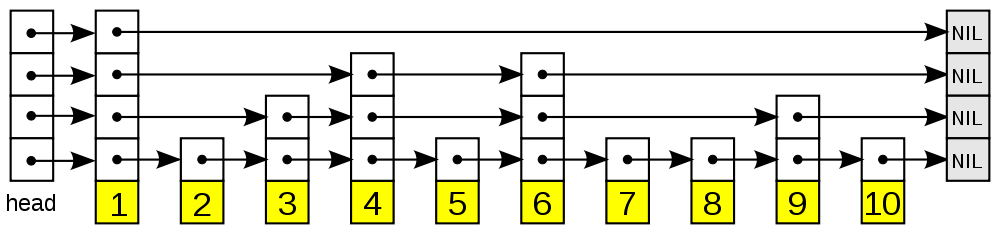

跳跃表
跳跃表 skiplist 是一种 随机化 的数据结构，以 有序 的方式在 层次化 的 链表 中保存元素：
- 查找 删除 添加 等操作都可以在 对数 期望时间下完成
- 比起平衡树来说， 跳跃表的实现要简单直观得多
跳跃表由 William Pugh 在论文《Skip lists: a probabilistic alternative to balanced trees》中提出
以下是个典型的跳跃表例子：

从图中可以看到， 跳跃表主要由以下部分构成：
- 表头 head ：负责维护跳跃表的节点指针
- 跳跃表节点：保存着元素值，以及多个层
- 层：保存着指向其他元素的指针。 高层 的指针 越过的元素数量 大于等于 低层 的指针
- 为了提高查找的效率，程序总是从高层先开始访问，然后随着元素值范围的缩小，慢慢降低层次
- 表尾：全部由 NULL 组成，表示跳跃表的末尾
因为跳跃表的定义可以在任何一本算法或数据结构的书中找到 所以不介绍跳跃表的具体实现方式或者具体的算法，而只介绍跳跃表在 Redis 的应用、核心数据结构和 API
实现
为了满足自身的功能需要， Redis 基于 William Pugh 论文中描述的跳跃表进行了以下修改：
- 允许 重复 的 score 值
- 多个不同的 member 的 score 值可以相同
- 进行 对比 操作时，不仅要检查 score 值， 还要 检查 member
- 当 score 值可以重复时，单靠 score 值无法判断一个元素的身份，所以需要连 member 域都一并检查才行
- 每个 节点 都带有一个 高度为 1 层 的 后退 指针，用于从 表尾 方向向 表头 方向 迭代
- 当执行 ZREVRANGE 或 ZREVRANGEBYSCORE 这类以逆序处理有序集的命令时，就会用到这个属性
这个修改版的跳跃表由 redis.h/zskiplist 结构定义：
typedef struct zskiplist { struct zskiplistNode *header, *tail; // 头节点，尾节点 unsigned long length; // 节点数量 int level; // 目前表内节点的最大层数 } zskiplist;
跳跃表的节点由 redis.h/zskiplistNode 定义：
typedef struct zskiplistNode { robj *obj; // member 对象 double score; // 分值 struct zskiplistNode *backward; // 后退指针 struct zskiplistLevel { // 层 struct zskiplistNode *forward; // 前进指针 unsigned int span; // 这个层跨越的节点数量 } level[]; } zskiplistNode;
API
以下是操作这两个数据结构的 API ，API 的用途与相应的算法复杂度：
| 函数 | 作用 | 复杂度 |
| zslCreateNode | 创建并返回一个新的跳跃表节点 | 最坏 \(O(1)\) |
| zslFreeNode | 释放给定的跳跃表节点 | 最坏 \(O(1)\) |
| zslCreate | 创建并初始化一个新的跳跃表 | 最坏 \(O(1)\) |
| zslFree | 释放给定的跳跃表 | 最坏 \(O(N)\) |
| zslInsert | 将一个包含给定 score 和 member 的新节点添加到跳跃表中 | 最坏 \(O(N)\) 平均 \(O(log{N})\) |
| zslDeleteNode | 删除给定的跳跃表节点 | 最坏 \(O(N)\) |
| zslDelete | 删除匹配给定 member 和 score 的元素 | 最坏 \(O(N)\) 平均 \(O(log{N})\) |
| zslFirstInRange | 找到跳跃表中第一个符合给定范围的元素 | 最坏 \(O(N)\) 平均 \(O(log{N})\) |
| zslLastInRange | 找到跳跃表中最后一个符合给定范围的元素 | 最坏 \(O(N)\) 平均 \(O(log{N})\) |
| zslDeleteRangeByScore | 删除 score 值在给定范围内的所有节点 | 最坏 \(O(N^2)\) |
| zslDeleteRangeByRank | 删除给定排序范围内的所有节点 | 最坏 \(O(N^2)\) |
| zslGetRank | 返回目标元素在有序集中的排位 | 最坏 \(O(N)\) 平均 \(O(log{N})\) |
| zslGetElementByRank | 根据给定排位，返回该排位上的元素节点 | 最坏 \(O(N)\) 平均 \(O(log{N})\) |